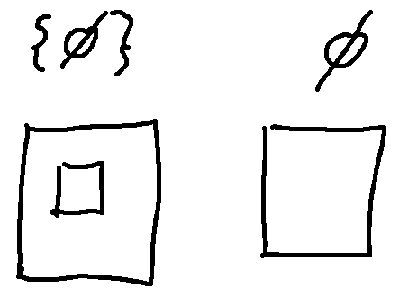

You have already seen simple examples of sets (in the readings but also very likely in previous classes). Let's look at some of the details and special cases.
Consider intersecting two small sets: \(\{1,2,3\} \cap \{2,3,4\}\). This is obviously equal to \(\{2,3\}\).
But what happens if we intersect two sets with less overlap? What is \(\{1,2,3\} \cap \{3,4,5\}\) equal to? It's very temping to say "3". However, set operations like intersection always produce sets as output. So the answer must be \(\{3\}\).
A convention shared by math and programming languages is that a function usually produces objects of a single specific type. So if one output is a set, typically all outputs are sets. If one output is an integer, probably all outputs are integers. This isn't always the case, but it's a helpful heuristic.
When is the empty set (\(\emptyset\)) a member of another set?
\(A = \{1, \emptyset, \text{frog} \}\)
\(B = \{1, 2, \text{frog} \}\)
The empty set is a member of A, because you can see it in the list of elements for A. It's not a member of B, because it's not listed in B's elements.
It's helpful to think of a set as a box, i.e. a real layer of structure. So 3 and {3} are different objects. The first is a number, the second is a box containing a number. If you have sets inside sets, that's also important structure. For example, the following two sets aren't equal. The first set has only three elements, one of which is a box.
{3, {4,5}, 6}
{3, 4, 5, 6}
Sometimes shipping companies use boxes around boxes and empty boxes to fill space. So you might get something like this from Amazon: \(\{3,\{4,5\}, \emptyset\}\). That looks like this:
The box idea is particularly helpful when trying to understand formulas involving the empty set. The empty set is written with a shorthand notation (\(\emptyset\)) that makes it seem like an atomic object. In fact, it is a box with nothing in it. It may help to think about the empty set as {}. (Don't write that in a final answer, because it's not correct mathematical notation.)
Why isn't the empty set written as {}? Well, probably for the same reason that empty lists and null pointers often have a distinctive symbol in computer languages. It makes notation with complex structure (e.g. nested curly brackets) easier to read.
Now, how about \(\{1,2,3\} \cap \{4,5,6\}\)? That's a set that doesn't contain anything, which is the empty set. \(\{1,2,3\} \cap \{4,5,6\} = \emptyset\)?
So what is \(\{\emptyset \}\)? This is a box containing the empty set, i.e. a box containing an empty box. The empty set is just a single empty box.

Here is a physical version of \(\{\{\ \emptyset \}\}\).
Now, suppose that A is some set. (It doesn't matter which set you pick for A.) Is the empty set a subset of A?
Let's recall our definition of what it means for one set to be a subset of another:
Definition: \(B \subseteq A\) if and only if
\(\forall x\), if \(x \in B\), then \(x \in A\)
Notice the difference in symbols: \(\subseteq\) is subset inclusion, \(\in\) is membership.
Now, suppose that B is the emptyset. Let's substitute that into our definition of subset inclusion:
\(\emptyset \subseteq A\) if and only if
\(\forall x\), if \(x \in \emptyset\), then \(x \in A\)
But if we pick any value x, \(x \in \emptyset\) is always false, because there isn't anything in the empty set. So the hypothesis is never true. Remember the funny truth table for if/then statements in mathematics: if the hypothesis is false, then the whole statement is true. This means that "if \(x \in \emptyset\), then \(x \in A\)" is true for every x. So " \(\forall x\), if \(x \in \emptyset\), then \(x \in A\)" is true. So \(\emptyset \subseteq A\).
Statements that are true for this reason make even mathematicians slightly nervous. So they are often described in a special way: a statement like \(\emptyset \subseteq A\) is "vacuously true."
Another piece of set theory that you may not have seen before is set-builder notation. You've probably seen sets defined like this:
A = {3, 4, 5}
B = {positive integers}
C = {0, 1, 4, 9, 16, 25, ....}
The first two methods work well for small finite sets and for sets that are easy to describe in words. The third notation is fine if it's easy to see the pattern, but it can be unclear if the pattern is complex or not obvious. Set-builder notation gives us a precise way to define a wider variety of sets.
Here's an example
\(A = \{(x,y) \in \mathbb{R}^2 \ \mid \ x = y^2\}\)
The part before the separator (|) describes a general class of objects, pairs of real numbers in this case. The part after the separator contains constraints that objects in the set must satisfy. You can think of the process as enumerating all objects in the general class, and then using the constraints to filter out just the objects that we want to put into the set. So A contains pairs of real numbers for which the first coordinate is the square of the second coordinate (e.g. (4,2)).
The distinction between the two halves of the notation is a bit fuzzy. So we could also define our set A like this:
\(A = \{(x,y) \ \mid \ x \in \mathbb{R}, y \in \mathbb{R}, \text{ and } x = y^2\}\)
Also notice that a colon (:) is sometimes used as the separator. This is particularly likely when the vertical bar is being used for something other purpose. For example, this set B contains pairs of integers where the first integer divides the second one (e.g. (3,6)).
\( B = \{(p,q) \in \mathbb{Z}^2 \ : \ p | q \}\)
Let's consider the following two sets. I claim that \(A \subseteq B \).
\(A = \{\lambda(2,3) + (1 - \lambda)(7,4) \ \mid\ \lambda \in [0,1] \}\)
\(B = \{(x,y) \ \mid \ x,y \in \mathbb{R}, x \ge 0, \text{ and } y \ge 0 \}\)
Gulp. What's in these sets anyhow? Probably useful to figure that out, so that we can feel confident that my claim is correct, before trying to prove it.
The set B is the upper right quadrant.
A contains all the things you get when you put values for lambda into this expression: \(\lambda(2,3) + (1 - \lambda)(7,4) \). Be quiet if you recognize what this is, so the rest of us can figure it out.
Remember that [0,1] is the interval of the real line between 0 and 1, including both endpoints. So \(\lambda\) is a real number. That means that \(\lambda(2,3)\) is a real number multiplied by a vector, i.e. equal to \((2\lambda,3\lambda)\).
Suppose we set \(\lambda = 1/2\). Then \(\lambda(2,3) + (1 - \lambda)(7,4) = 1/2(2,3) + 1/2(7,4) = (1, 1.5) + (3.5, 2) = (4.5,3.5) \)
We can make a table of what this expression produces for various values of \(\lambda\). Notice that the set definition says that \(\lambda\) must live in the range [0,1].
| \(\lambda\) | \(1-\lambda\) | \(\lambda(2,3) + (1 - \lambda)(7,4) \) |
| 0 | 1 | (7,4) |
| 1/3 | 2/3 | (5.33, 3.67) |
| 1/2 | 1/2 | (4.5, 3.5) |
| 2/3 | 1/3 | (3.67, 3.33) |
| 1 | 0 | (2,3) |
And then sketch these on a handy scrap of paper.
Aha, if we filled in a few more dots, this looks like it might be a line segment. And the line segment looks like it lives in the upper right quadrant. Strictly speaking, our proof of the claim (next video) won't need this geometric description. But it helps make the claim seem sensible rather than just some game with equations.